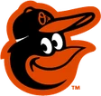

← All scores, May 1 · ABL
| 1 | 2 | 3 | 4 | 5 | 6 | 7 | 8 | 9 | R | H | E | |
|---|---|---|---|---|---|---|---|---|---|---|---|---|
| MON | 0 | 1 | 2 | 1 | 1 | 0 | 0 | 0 | 0 | 5 | 9 | 1 |
 BAL | 0 | 0 | 0 | 2 | 0 | 0 | 1 | 0 | 0 | 3 | 9 | 2 |
W Rick Helling · L Brian Sweeney · SV Billy Koch
Montreal RoyeauxAway
| Batters | AB | R | H | RBI | BB | K | HR | SB |
|---|---|---|---|---|---|---|---|---|
| Greg Vaughn DH | 4 | 0 | 1 | 0 | 0 | 1 | 0 | 1 |
| Chris Sexton SS | 4 | 1 | 1 | 0 | 0 | 2 | 0 | 0 |
| Rafael Palmeiro LF | 4 | 1 | 2 | 2 | 0 | 1 | 0 | 0 |
| Richard Hidalgo CF | 4 | 0 | 1 | 1 | 0 | 2 | 0 | 0 |
| Jeromy Burnitz RF | 4 | 1 | 1 | 1 | 0 | 2 | 1 | 0 |
| Eduardo Perez 1B | 4 | 1 | 1 | 0 | 0 | 1 | 0 | 0 |
| Frank Menechino 3B | 4 | 0 | 2 | 0 | 0 | 0 | 0 | 0 |
| Mike Bell 2B | 4 | 0 | 0 | 0 | 0 | 1 | 0 | 0 |
| Marcus Jensen C | 3 | 1 | 0 | 0 | 1 | 1 | 0 | 0 |
| Totals | 35 | 5 | 9 | 4 | 1 | 11 | 1 | 1 |
SB: Vaughn. 2B: Palmeiro, Hidalgo, Perez. HR: Burnitz. GIDP: Bell.
| Pitchers | IP | H | R | ER | BB | K | HR | PC | BF |
|---|---|---|---|---|---|---|---|---|---|
| Rick Helling (W) | 8.0 | 8 | 3 | 3 | 0 | 0 | 2 | 95 | 30 |
| Billy Koch (S) | 1.0 | 1 | 0 | 0 | 0 | 1 | 0 | 15 | 4 |
| Totals | 9.0 | 9 | 3 | 3 | 0 | 1 | 2 | 110 | 34 |
Baltimore OriolesHome
| Batters | AB | R | H | RBI | BB | K | HR | SB |
|---|---|---|---|---|---|---|---|---|
| Charles Gipson LF | 4 | 0 | 0 | 0 | 0 | 0 | 0 | 0 |
| Benny Agbayani RF | 4 | 0 | 1 | 0 | 0 | 0 | 0 | 0 |
| Frank Catalanotto 1B | 4 | 1 | 1 | 1 | 0 | 0 | 1 | 0 |
| Carlos Lee 3B | 4 | 1 | 1 | 0 | 0 | 0 | 0 | 0 |
| Juan Uribe 2B | 3 | 0 | 1 | 1 | 0 | 0 | 0 | 0 |
| Graham Koonce PH | 1 | 0 | 0 | 0 | 0 | 1 | 0 | 0 |
| A.J. Hinch C | 3 | 1 | 2 | 1 | 0 | 0 | 1 | 0 |
| John Vander Wal PH | 1 | 0 | 1 | 0 | 0 | 0 | 0 | 0 |
| Xavier Nady DH | 4 | 0 | 1 | 0 | 0 | 0 | 0 | 0 |
| Rey Ordonez SS | 3 | 0 | 1 | 0 | 0 | 0 | 0 | 0 |
| Eduardo Jimenez CF | 3 | 0 | 0 | 0 | 0 | 0 | 0 | 0 |
| Totals | 34 | 3 | 9 | 3 | 0 | 1 | 2 | 0 |
HR: Catalanotto, Hinch. 3B: Lee. CS: Uribe. GIDP: Nady. 2B: Ordonez.
| Pitchers | IP | H | R | ER | BB | K | HR | PC | BF |
|---|---|---|---|---|---|---|---|---|---|
| Brian Sweeney (L) | 4.2 | 7 | 5 | 5 | 1 | 6 | 1 | 94 | 22 |
| Rich Garces | 3.1 | 2 | 0 | 0 | 0 | 4 | 0 | 52 | 11 |
| Aquillino Lopez | 1.0 | 0 | 0 | 0 | 0 | 1 | 0 | 13 | 3 |
| Totals | 9.0 | 9 | 5 | 5 | 1 | 11 | 1 | 159 | 36 |